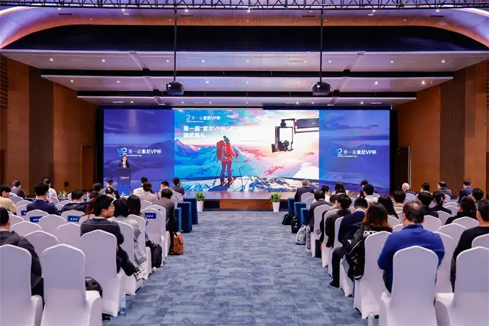
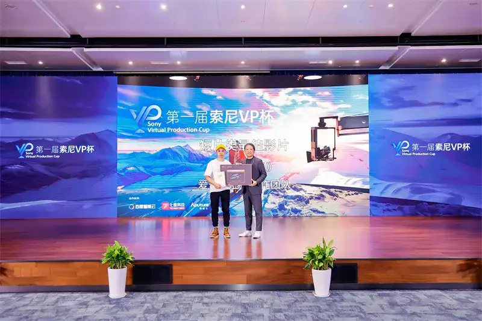
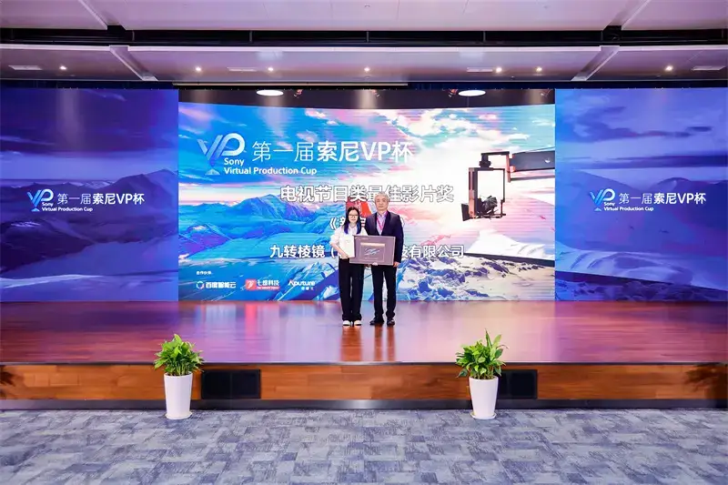
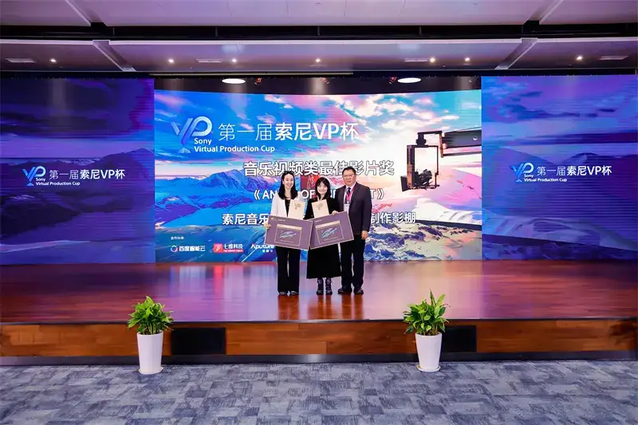
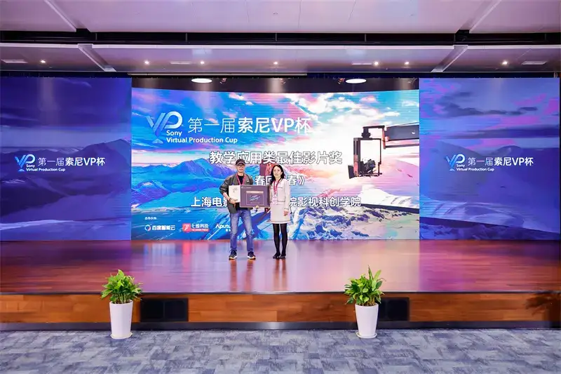
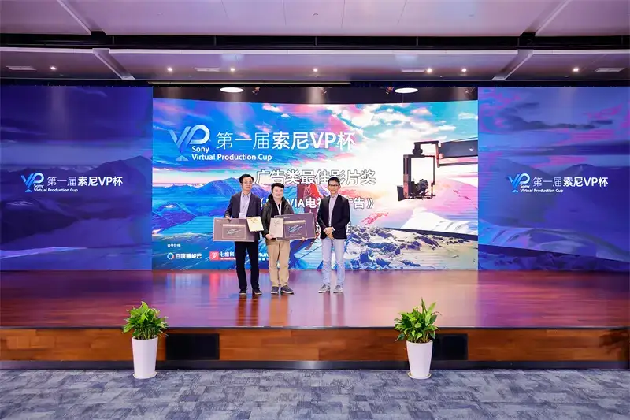
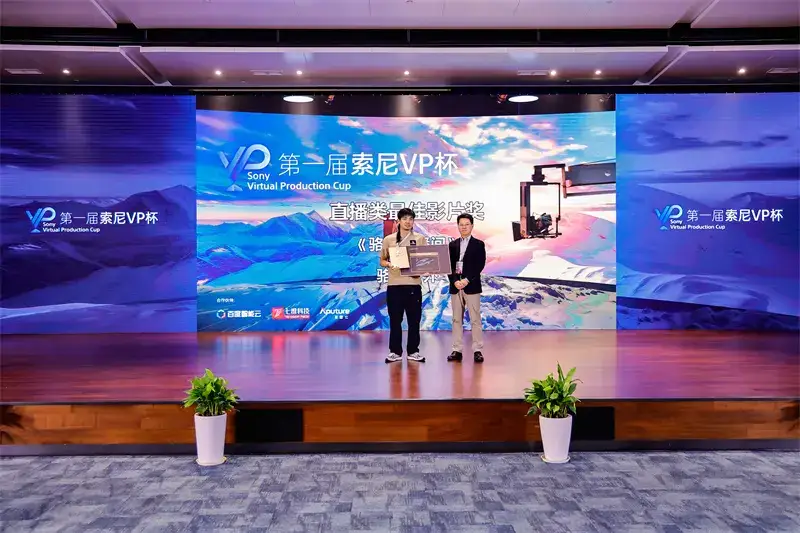

This month, the awards ceremony of the 1st Sony VP Cup Virtual Production Competition was held during the Shanghai International Virtual Production Conference. After close competition, prizes were announced across 10 categories, including the Best Film award and the Excellence Film award. Cameraman Network was invited to interview some of the Best Film winners, to discuss the present and the future of virtual production.

Awards Ceremony of the 1st Sony VP Cup Virtual Production Competition
Virtual production for film and TV is an important technique today. It uses computer-generated images and other technologies to create realistic environments and effects in a studio. This technique lets a crew build scenes faster and switch environments easily. More importantly, it lets the shoot take place under more controlled conditions, which raises efficiency and lowers cost.
1
Today in the domestic film and TV industry, virtual production is entering a wide range of creative settings and spreading fast. The prize categories of the Sony VP Cup show this clearly: live application, advertising, teaching application, music video, TV program, and short film. They cover project types in different fields and at different scales.
Some winning teams were not trying virtual production for the first time. The virtual production highlight reel of The Great Dream of Returning Home, submitted by the iQiyi virtual production team, won Best Film in the short film category. The core creators of this film, including the director, the cinematographer, the art director, and the lighting team, had already worked together on a virtual shooting project called Rain of Clouds. In that first try, the team gradually came to accept and learn the workflow and technology of virtual shooting.

Tatsuo Eguchi, Chairman and President of Sony Interactive Entertainment (Shanghai) Inc., presents the award
This time, the same team made The Great Dream of Returning Home very smoothly. From the early stage, they decided that some parts would use virtual production. So both the script and the art scene design were targeted for it. In the end, in The Great Dream of Returning Home, the share of virtual-shot footage in the film reached close to 20 percent.
Jiuzhuan Prism (Beijing) Technology Co., Ltd., which won Best Film in the TV program category, was also an early adopter of virtual production. Its self-produced film The Wanderer is the first feature-length drama in China made entirely with virtual shooting technology. The winning work New Dingjun Mountain is an innovative opera program at the first China Digital Concert. The team wanted to bring traditional opera art together with futuristic virtual digital technology. Virtual production offered a way to break the limits of imagination. It let the team realize the breakthrough images in their minds that blend tradition, and show a perfect stage of national opera.

Mr. Xie Biao, President of the Electronic Systems Division of Sony (China) Co., Ltd., presents the award
Of course, some Best Film winners were trying the technology for the first time. The music video Angel of the Night, produced by Sony Music Entertainment, was the first virtual production MV project of Sony Music Entertainment in China. It won Best Film in the music video category.

Fan Hongjun, Dean of the Sony Imaging Technology Institute and Director of the Sony Explora Science Museum, presents the award to the music video Best Film winner
2
For these traditional film and TV applications, people in the industry inevitably compare virtual production with traditional live-action shooting or green-screen shooting. The winning teams spoke from real experience about how virtual production differs and what advantages it brings.
Cost was the word everyone mentioned when comparing with live-action shooting. The virtual production in The Great Dream of Returning Home involved 7 scenes and 26 moods. One scene was a library. If it were built for real, a very small book room, a few book towers, and a few candlesticks might already use up most of the budget. But virtual shooting greatly expanded the art director's room to work. The team built a two-story library with many bookcases, passageways, and lights. Within a limited cost, they made this library feel very grand.
Spring Returns Again, submitted by the Film and Television Innovation College of Shanghai Film Art Academy, won Best Film in the teaching application category. Its main scene is a courtyard tea room full of Zen feeling. The teacher in charge said it was almost impossible to find a location in Shanghai that so perfectly matched the film's idea. Even at a film city, they would have to spend money on large-scale changes.

Peng Xiaoshan, Vice President of the Electronic Systems Division of Sony (China) Co., Ltd., presents the award
Virtual production also helps the budget beyond saving set construction. A large part of it is the control over the environment and the gain in shooting efficiency. One observatory scene in The Great Dream of Returning Home needed four moods: day, night, early morning, and dusk. Live-action shooting depends on the weather. Even with good weather, you must chase the daylight, which makes it hard to raise efficiency in limited time. It also creates matching problems when weather differs across the days of shooting. Virtual production solves this perfectly, because in the studio you can get the sky and mood you want at any time.
For some other teams, building a real set was not a question of cost, but of whether it could be done at all.
New Dingjun Mountain focuses on the clash between the future and tradition, so the team made many artistic choices in the scene design. With traditional execution, it would be hard to realize what the creators imagined. The scenes draw on the Chinese traditional dougong interlocking bracket structure, but they also have a futuristic feel in color. Such a look is hard to achieve with a traditional physical set.
The MV Angel of the Night even moved its scenes to places almost impossible to reach, such as the peak of a snow mountain and the surface of the moon. Virtual production is clearly the best tool to make fantasy real.
3
On the other hand, compared with green-screen keying, virtual production has advantages in many ways. First, the green-screen problem of green spill does not exist at all. Even if actors and props have reflective surfaces, they will not reflect a green that is hard to fix in post. Second, virtual production gives stronger realism. The Great Dream of Returning Home has several scenes with water. The scenery on the LED screen reflects on the water. This real lighting effect is hard to achieve with a green screen.
This also holds for actor performance. Virtual production gives stronger immersion than a green screen. New Dingjun Mountain involves live actors and virtual characters interacting on the same stage. With a green screen, the opera actors would have to perform only from imagination, and the virtual character would be added later, so the interaction would feel split. Now the team pre-recorded the motion capture of the virtual character. On set, they show it through AR (augmented reality), so the actors can see the virtual character on stage in real time on the monitor, and interact and coordinate better.
As for acting immersion, everyone reported that virtual shooting reaches or comes very close to the state of live-action shooting. The actor can see the real environment on the huge LED wall. In playback, the actor sees that the studio shot looks no different from a real location. At the same time, the studio blocks outside physical interference, which makes professional actors more fully committed to the performance.
4
The BRAVIA TV advertisement submitted by the Sony Guanchi Studio won Best Film in the advertising category. When talking about the making of this film, the creators also mentioned several advantages of virtual production.

Mr. Liao Xuling, Managing Director of Sony Pictures in China, presents the award
First is the combined use of virtual production and AI. The BRAVIA TV ad has a racing game scene. Between the buildings there are many billboards. Normally, making the ads within these ads would cost extra, because you need extra actors, extra shooting, and extra post-production. Now all these billboards are AI-generated, with no risk of copyright, portrait rights, or ownership of specific products.
Also, many of the extras in this film, such as those in mid and long shots and the less important passers-by, were made with AI. In traditional CG, making CG characters costs a great deal of time and resources. Now, using AI saves nearly two thirds of those resources.
There is also an interesting point. Because most of the scene is not physical, it is easy to change. But in a sense this can become a new burden. Both the director and the client may ask for immediate changes on set.
But when only simple changes and small tweaks are involved, being able to change on set is a very good thing. It raises communication efficiency and avoids more communication cost and extra work in post.
5
Compared with traditional film and TV, live-stream selling is a new shooting application that has emerged in recent years, a completely different field. The winner of Best Film in the live category was the well-known outdoor brand Camel. They used a virtual background in the stream. Behind the host there was no longer a rough backdrop, but blue sky, white clouds, snow mountains, and grassland. This moving content gave viewers more freshness and matched the character of an outdoor brand.

Lu Weizhe, Director of the Business Strategy Office of Sony (China) Co., Ltd., presents the award
Camel's goal for its live streams is to build a one-of-a-kind streaming room, and using virtual methods is a key part of that. At first the cost is high, because it includes equipment investment and technology upgrades. The head of Camel's live streams said honestly that the better visual look from virtual production does help sales, but it is not yet a dramatic difference. They value the long-term effect more, both the falling marginal cost and the lift to the brand tone.
Camel is still in the early stage of trying virtual production, far from a complete state. They will try more content, not only moving backdrops, and explore further what virtual production can bring to live-stream selling.
6
As the organizer of the VP Cup, Sony has played a leading role in the development and spread of virtual production. As a major global provider of film and TV equipment, Sony offers a full set of software and hardware for virtual production. Sony's core three items (camera, screen, and monitor) ensure end-to-end color consistency. On the software side, the virtual production tool set lets the cinematographer and director see the final image in the preview stage. Color calibration tools can unify different LED screens to the color you want.
Among the entries, a great many teams used Sony cameras. These devices performed efficiently in virtual production settings and won praise. Among the winning works, Angel of the Night used a full set of Sony software and hardware, and New Dingjun Mountain used the Sony CineAltaV 2 cinema camera.
Camel Outdoor also used all-Sony equipment. Sony cameras were used not only for live streaming but also for short video, and the strong autofocus greatly raised efficiency. The black crystal screen used for virtual production also impressed the team with its detail, and they bought it after comparing several competing products.
As a pioneering event in Chinese virtual production, the Sony VP Cup not only shows Sony's innovative technology, but also brings new momentum to the innovation of the film and TV industry. Virtual production is breaking the limits of traditional production and giving creators wider space and more ways to express themselves. In the future, as the technology matures and more talent emerges, virtual production will play an ever greater role in the industry in China and worldwide. Sony, with its global name and leadership in film hardware, will continue to give strong support to the growth of virtual production in China.